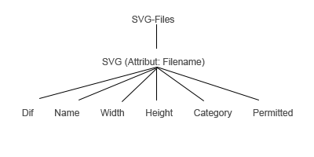

Die allgemeine Befehlssyntax ist folgendermaßen aufgebaut:
<Befehlsname>(<Parameter1>,...<ParameterN>)
Es gibt folgende gültige Befehlsnamen: square, circle, rectangle,
line, triangle und clearcell.
Parametertypen gibt es folgende: <Position>,
<Breite/Höhe>, <Punkt> und <Farbe>.
Breite/Höhe werden als positive Integer angegeben.
Folgende Farbangaben sind erlaubt: aqua, black, blue, fuchsia,
gray, green, lime, maroon, navy, olive, orange, purple, red,
silver, teal und yellow.
Die Positions- und Punktsyntax
sind etwas komplizierter.
Die Positionssyntax ist folgendermaßen aufgebaut:
<Spalte>,<Zeile>
Die Syntax von
<Spalte> und <Zeile> lautet wiederum:
<Startposition>[[:<Schrittweite>]:<Endposition>]]
<Schrittweite> sowie <Endposition> sind optionale
Angaben (markiert durch die eckigen Klammern).
Erlaubt
sind also folgende Formen:
<Startposition>
<Startposition>:<Endposition>
<Startposition>:<Schrittweite>:<Endposition>
Für die Start- und Endposition und die Schrittweite werden
Integer erwartet.
Die Punktsyntax hat den folgenden Aufbau:
<Horizontalankerpunkt><Vertikalankerpunkt>
Für <Horizontalankerpunkt> gibt es folgende gültige
Angaben: “L”,”C” und “R”.
“L” steht für “Left”, “C” für
“Center” und “R” für “Right”.
Für
<Vertikalankerpunkt> gibt es folgende gültige Angaben:
“T”,”C” und “B”.
“T” steht für “Top”, “C” für “Center”
und “B” für “Bottom”.
Die Angaben sind nicht
case-sensitiv und dürfen in ihrer Reihenfolge vertauscht werden.
Beispiel: “TL”, “LT”, “tl” und “lt” beschreiben alle den
Ankerpunkt links oben in einer Zelle.
Somit kann man
neun mögliche Ankerpunkte auf jeweils 4 verschiedene Arten
beschreiben (mit Ausnahme des Mittelpunktes (“CC” bzw. “cc”)).
Bevor ein Befehl ausgeführt wird, wird dieser geparst und anschließend die Parameter validiert.
Beim Parsen wird Folgendes in folgender Reihenfolge geprüft:
Bei falschen Eingaben wird der Benutzer über die erste Falscheingabe entsprechend informiert.
Die Funktion zum Parsen des Befehls namens “parseCommand” bekommt die eingegebene Zeile des Benutzers als Parameter. Zuerst wird diese Zeile mittels der öffnenden Klammer in mehrere Teile getrennt. Erwartet werden zwei Teile: Der Name des Befehls und die Befehlsparameter.
(siehe Code-Snippet zu "validateCmdName")
Zur Validierung, dass ein gültiger Befehlsname angegeben wurde, wird eine Switch/Case-Struktur verwendet. Ist der Befehlsname gültig, wird die erwartete Anzahl an Parametern für diesen Befehl zurückgegeben, andernfalls wird -1 zurückgegeben. Der Rückgabewert wird demzufolge auf Gleichheit mit -1 überprüft.
Zur Validierung des Vorhandenseins der Klammern wird die String-Methode indexOf verwendet. Ist das gesuchte Zeichen nicht im String vorhanden gibt diese Funktion den Wert -1 zurück. Auch hier wird auf diesen Wert geprüft.
Des Weiteren musste festgestellt werden, dass nur eine öffnende Klammer angegeben wurde, da man anhand dieser die Befehlszeile in zwei Teile auftrennt. Um dies festzustellen, wird die Variable, die den String mit den Befehlsparametern hält nur dann initialisiert, wenn das Array mit den durch die öffnende Klammer aufgeteilten Strings genau 2 Strings enthält. Diese Variable wird dementsprechend auf den Wert undefined geprüft.
siehe Code-Snippet zu "validateNumberOfParams"
Zur Validierung der Parameteranzahl wird die bereits oben erwähnte Switch/Case-Struktur verwendet. Zusätzlich wird noch überprüft, ob eine Standardfarbe ausgewählt wurde. Ist das der Fall, so wird die Anzahl der angegebenen Parameter auf Gleichheit mit der erwarteten Parameteranzahl-1 geprüft. Schlägt der Vergleich fehl, so wird anschließend nochmal mit der erwarteten Parameteranzahl verglichen, um festzustellen, ob trotz Standardfarbe eine Farbe als Parameter angegeben wurde. Auch dies wird als korrekte Eingabe akzeptiert.
function parseCommand(cmdLine) {
var cmdAndParams = cmdLine.split("(");
var cmd = cmdAndParams[0], params;
if(cmdAndParams.length == 2) {
params = cmdAndParams[1];
params = params.replace(")","");
params = params.split(",");
}
if(!validateCmdName(cmd)) {
$("#err").html("Unknown command.");
} else if (cmdLine.indexOf("(") == -1) {
$("#err").html("Opening bracket is missing.");
} else if (params == undefined) {
$("#err").html("Too much opening brackets.");
} else if (cmdLine.indexOf(")") == -1) {
$("#err").html("Closing bracket is missing.");
} else if(!validateNumberOfParams(cmd, params)) {
var numParams = params.length;
if(cmdAndParams[1].trim() == ")") numParams = 0;
$("#err").html("Invalid number of parameters (required " +
requiredParamCountForCmd(cmdAndParams[0]) +
", got "+ numParams + ").");
}
if ($("#err").html().length == 0) return true;
else return false;
}function validateCmdName(cmd) {
return (requiredParamCountForCmd(cmd) != -1);
}
function requiredParamCountForCmd(cmd) {
switch(cmd) {
case "clearcell": return 2;
case "square":
case "circle": return 3;
case "rectangle":
case "line": return 5;
case "triangle": return 6;
default: return -1;
}
}function validateNumberOfParams(cmd, params) {
var paramCount = requiredParamCountForCmd(cmd);
if($("#color_dropdown").val() != "(None)" &&
params.length == paramCount-1)
return true;
if(params.length != paramCount)
return false;
return true;
}Die Validierung der Parameter erfolgt in der Reihenfolge in der die sie erwartet werden:
Bei falschen Eingaben wird der Benutzer über die erste Falscheingabe entsprechend informiert.
function validateParameters(cmdLine) {
var cmdAndParams = cmdLine.split("(");
var cmd = cmdAndParams[0], params = cmdAndParams[1];
params = params.replace(")","").split(",");
if(!validatePositionParams(cmd, params)) return 0;
if(!validateLineParams(cmd, params)) return 0;
if(!validateTriangleParams(cmd, params)) return 0;
if(!validateColorParam(cmd, params)) return 0;
return 1;
}Zur Validierung der Positionsangaben für die Spalte und Zeile werden diese in ein Objekt positionRanges umgewandelt und mit einer entsprechenden Methode validiert. Das Objekt teilt die Positionsangaben in Spalte und Zeile auf. Diese wiederum werden mittels des Objekts positionRange in Startposition, Endposition und Schrittweite aufgeteilt. Diese Attribute werden nacheinander in der angegebenen Reihenfolge zuerst für die Spalte und danach für die Zeile überprüft. Der Benutzer wird über alle falschen aus den 6 möglichen Angaben informiert.
Die Start- und Endpositionen werden jeweils 4 Prüfungen
unterzogen:
Ist die Positionsangabe...
Bestehen die Positionsangaben die Prüfungen, so sind sie valide. Programmiertechnisch wird auf das Gegenteil geprüft und ein Fehlermeldungstext bei positivem Ergebnis generiert.
Die Schrittweite darf entweder positiv- oder negativ-gannzahlig sein. Null darf sie nicht sein. Ist die Endposition kleiner als die Startposition, so ist eine negative Schrittweite valide und eine positive Schrittweite invalide. Ist die Startposition kleiner-gleich der Endposition, so gilt der umgekehrte Fall. Damit die Positionsangaben mit ein und derselben For-Schleife verwendet werden können, werden im Falle, dass die Endposition kleiner als die Startposition ist, die Vorzeichen von Start-/Endposition und Schrittweite getauscht, sodass die Schrittweite wieder > 0 sein sollte. Aus diesem Grund muss zur Validierung die Schrittweite lediglich auf > 0 und zusätzlich darauf geprüft werden, ob sie ein Integer ist.
function validatePositionParams(cmd, params) {
var posRanges;
if(cmd == "rectangle") posRanges = rectangleRanges(params);
else posRanges = new positionRanges(params[0],params[1]);
var errMsg = posRanges.validate();
if(errMsg) {
$("#err").html(errMsg);
return false;
}
return true;
}function rectangleRanges(params) {
var colRangeStr = params[0] + ":" + (Number(params[0]) + Number(params[2]) - 1).toString();
var rowRangeStr = params[1] + ":" + (Number(params[1]) + Number(params[3]) - 1).toString();
return new positionRanges(colRangeStr,rowRangeStr);
}function positionRange(rangeStr) {
var range = rangeStr.split(":");
if (range.length == 3) {
this.from = Number(range[0]);
this.inc = Number(range[1]);
this.to = Number(range[2]);
} else if(range.length == 2) {
this.from = Number(range[0]);
this.to = Number(range[1]);
if(this.to >= this.from) this.inc = 1;
else this.inc = -1;
} else if(range.length == 1) {
this.from = this.to = Number(range[0]);
this.inc = 1;
} else {
this.from = this.to = this.inc = Number.NaN;
}
this.swapSign = function() {
this.from *= -1;
this.inc *= -1;
this.to *= -1;
this.signSwapped = true;
}
if(this.from > this.to && this.from >= 0 && this.to >= 0) this.swapSign();
else this.signSwapped = false;
this.validateInc = function() {
return (this.to-this.from >= 0 && this.inc > 0 &&
this.inc == parseInt(this.inc) )
};
}function positionRanges(colStr, rowStr) {
this.colRange = new positionRange(colStr);
this.rowRange = new positionRange(rowStr);
this.validate = function() {
var errMsg = "Invalid position Ranges (", err=false;
if(this.colRange.signSwapped) this.colRange.swapSign();
if(this.rowRange.signSwapped) this.rowRange.swapSign();
if(Number.isNaN(this.colRange.from) ||
this.colRange.from < 1 ||
this.colRange.from > bounds[0] ||
this.colRange.from != parseInt(this.colRange.from) ) {
errMsg += "colum start position";
err = true;
}
if(Number.isNaN(this.colRange.to) ||
this.colRange.to < 1 ||
this.colRange.to > bounds[0] ||
this.colRange.to != parseInt(this.colRange.to)) {
if(err) errMsg += ", ";
errMsg += "colum end position";
err = true;
}
if(this.colRange.signSwapped) this.colRange.swapSign();
if(this.colRange.inc != 1) {
if(!this.colRange.validateInc()) {
if(err) errMsg += ", ";
errMsg += "colum increment"
err = true;
}
}
if(this.colRange.signSwapped) this.colRange.swapSign();
if(Number.isNaN(this.rowRange.from) ||
this.rowRange.from < 1 ||
this.rowRange.from > bounds[1] ||
this.rowRange.from != parseInt(this.rowRange.from)) {
if(err) errMsg += ", ";
errMsg += "row start position"
err = true;
}
if(Number.isNaN(this.rowRange.to) ||
this.rowRange.to < 1 ||
this.rowRange.to > bounds[1] ||
this.rowRange.to != parseInt(this.rowRange.to)) {
if(err) errMsg += ", ";
errMsg += "row end position"
err = true;
}
if(this.rowRange.signSwapped) this.rowRange.swapSign();
if(this.rowRange.inc != 1) {
if(!this.rowRange.validateInc()) {
if(err) errMsg += ", ";
errMsg += "row increment"
err = true;
}
}
if(this.rowRange.signSwapped) this.rowRange.swapSign();
if(err) return errMsg + ").";
else return undefined;
};
}Zur Validierung eines Punktes wird zuerst geprüft, ob genau zwei Ankerpunkte (also zwei Buchstaben) angegeben wurden. Ist dies der Fall wird anschließend geprüft, ob die erste Angabe ein valider Horizontalankerpunkt und die zweite Angabe ein valider Vertikalankerpunkt ist oder umgekehrt. Ist auch diese Prüfung erfolgreich, handelt es sich um einen validen Punkt. In den anderen Fällen wurde ein invalider Punkt angegeben.
function validatePoint(p) {
var validYParts = ["t","c","b"];
var validXParts = ["l","c","r"];
if(p.length != 2) return false;
if( (validYParts.indexOf(p[0]) != -1 && validXParts.indexOf(p[1]) != -1) ||
(validYParts.indexOf(p[1]) != -1 && validXParts.indexOf(p[0]) != -1 ) )
return true;
else return false;
}Zur Validierung einer Linie wird überprüft, ob die angegebenen Punkte valide und verschieden sind.
function validateLineParams(cmd, params) {
if(cmd.indexOf("line") != -1) {
var errMsg = validateLine(params[2].toLowerCase(), params[3].toLowerCase());
if(errMsg) {
$("#err").html(errMsg);
return false;
}
}
return true;
}function validateLine(p1,p2) {
if(validatePoint(p1) && validatePoint(p2)) {
var p1o = pointOffset(p1), p2o = pointOffset(p2);
if (p1o[0] != p2o[0] || p1o[1] != p2o[1])
return undefined;
else return "Invalid line (points are equal).";
} else return "Invalid points.";
}function pointOffset(p) {
var validYParts = [ "t", "c", "b" ];
var validXParts = [ "l", "c", "r" ];
var offsets = [ 2, cellsize / 2 + 1, cellsize ];
var pOffset = [ 0, 0 ];
if (p == "cc")
pOffset = [ offsets[1], offsets[1] ];
else if (validYParts.indexOf(p[0]) != -1 && validXParts.indexOf(p[1]) != -1) {
pOffset[0] = offsets[validXParts.indexOf(p[1])];
pOffset[1] = offsets[validYParts.indexOf(p[0])];
} else if (validYParts.indexOf(p[1]) != -1
&& validXParts.indexOf(p[0]) != -1) {
pOffset[0] = offsets[validXParts.indexOf(p[0])];
pOffset[1] = offsets[validYParts.indexOf(p[1])];
}
return pOffset;
}Zur Validierung eines Dreicks wird zuerst überprüft, ob die angegebenen Punkte valide sind. Ist dies der Fall wird anschließend überprüft, ob die drei angegebenen Punkte eine Fläche “aufspannen”.
Um festzustellen, ob die angegebenen Punkte für das Dreieck eine
Fläche “aufspannen”, wird eine Vektorformel verwendet. Zuerst
werden die Verbindungsverktoren vom ersten und zweiten, sowie dem
ersten und dritten Vektoren berechnet. Anschließend wird die
Determinante der beiden Verbindungsvektoren berechnet. Ist das
Ergebnis ungleich Null, wird eine Fläche aufgespannt. Die
eigentlich korrekte Dreiecksfläche entspricht der Hälfte der
Betragswertes der Determinante, welche jedoch für Validierung
nicht benötigt wird.
Zur Vereinfachung wurde eine
Vektorklasse mit einer Vektorsubtraktionsmethode erstellt, mit
der die Verbindungsvektoren berechnet werden.
function validateTriangleParams(cmd, params) {
if(cmd.indexOf("triangle") != -1) {
var i = 2;
if( !validatePoint(params[i].toLowerCase() ) ||
!validatePoint(params[i+1].toLowerCase() ) ||
!validatePoint(params[i+2].toLowerCase() ) ) {
$("#err").html("Invalid points.");
return false;
} else if( !validateTriangle(params[i].toLowerCase(), params[i+1].toLowerCase(), params[i+2].toLowerCase() ) ) {
$("#err").html("Invalid triangle (area equals zero).");
return false;
}
}
return true;
}function validateTriangle(p1,p2,p3) {
var p1o = pointOffset(p1), p2o = pointOffset(p2), p3o = pointOffset(p3);
var p1v = new vector(p1o), p2v = new vector(p2o), p3v = new vector(p3o);
var a = p1v.sub(p2v), b = p1v.sub(p3v);
return (a.x*b.y-a.y*b.x != 0);
}function vector(point) {
if(point != null) {
this.x = point[0];
this.y = point[1];
} else {
this.x = 0;
this.y = 0;
}
this.sub = function(v) {
var ret = new vector();
ret.x = this.x - v.x;
ret.y = this.y - v.y;
return ret;
};
}Da die Menge der validen Farben in einem globalen Array hinterlegt ist, wird der Einfachheit halber geprüft, ob die angegebene Farbe im Array vorhanden ist. Bei Verwendung des clearcell-Befehls oder einer Standardfarbe wird die Validierung der Farbe explizit übersprungen, weil in diesen Fällen keine Farbe angegeben wird.
function validateColorParam(cmd, params) {
if(cmd.indexOf("clearcell") == -1 && params.length == requiredParamCountForCmd(cmd)) {
if(!validateColor(params[params.length-1])) {
$("#err").html("Invalid color.");
return false;
}
}
return true;
}var validColors = ["aqua", "black", "blue", "fuchsia", "gray", "green", "lime",
"maroon", "navy", "olive", "orange", "purple", "red", "silver", "teal", "yellow" ];
function validateColor(color)
{
return validColors.indexOf(color) != -1;
}Um zu ermitteln, ob das durch Befehle erstellte Mosaik mit dem Muster-Mosaik identisch ist und das Spiel damit gewonnen wurde, wird wie folgt vorgegangen:
War der Vergleich positiv, wird dem Spieler eine Gewinnmeldung inklusive der Anzahl an benötigten Befehlen präsentiert.
function compareSVGs() {
var user_svg_elements = $("#mosaics > *[id^='e']");
var template_svg_elements = $("#mosaics-template > *[id^='te']");
var template_child, user_child;
// 1st check if counts of svg elements are equal
if(template_svg_elements.length == user_svg_elements.length &&
template_svg_elements.length != 0) {
for(var i = 0; i < user_svg_elements.length; i++) {
// get user svg element
user_child = user_svg_elements.eq(i);
// find corresponding template svg element
template_child = $("#t" + user_child.attr("id"));
if( template_child.get(0) != undefined ) {
// 2nd check if counts of svg attributes are equal
if( user_child.get(0).attributes.length ==
template_child.get(0).attributes.length) {
for(var j = 0; j < user_child.get(0).attributes.length; j++) {
if( user_child.get(0).attributes[j].name == "id") continue;
// 3rd check if attribute names and values are equal
if( user_child.get(0).attributes[j].value !=
template_child.attr(user_child.get(0).attributes[j].name) )
{
// attribute values and names are not equal
return false;
}
}
}
} else {
// template has no element at the corresponding position
// ==> number of elements are equal, positions are not equal
return false;
}
}
// element counts, id's (and therefore implicitly the positions)
// and attribute names and values were equal
return true;
} else {
// element counts were not equal
return false;
}
}Um einen Überblick über alle vorhandenen SVGs und deren Metadaten zu bekommen, wird eine XML Datei benutzt, die alle wichtigen Informationen der SVGs beinhaltet. Die Elemente sind so gewählt, dass man für den SVG Katalog im Spiel, die SVGs nach den wichtigsten Suchkriterien filtern kann. Das wichtigste Element ist dabei der <Name>, der eine SVG eindeutig identifizierbar macht. Das Attribut "Filename" wird zur besseren Übersicht beim lesen der XML-Datei dem SVG Knoten zugefügt.
Mit den anderen abgespeicherten Elementen <Dif> (Difficulty), <Width> und <Length> (kombiniert als Größe der SVG), sowie <Category> stehen später 3 verschiedene Suchkriterien im SVG Katalog zur Verfügung.
Damit nur sinnvolle und ordentliche SVGs im Spiel erscheinen, werden im Editor erstellte SVGs nicht sofort freigegeben. Ein Admin hat über eine passwortgeschützte Webseite die Möglichkeit, die im Editor erstellten SVGs zu überprüfen. Auf dieser Webseite, die später noch näher erläutert wird, können SVG Metadaten geändert oder auch ganze SVGs gelöscht werden. Ist eine SVG in Ordnung, wird sie über das XML-Element <Permitted> für das Spiel freigegeben.
Für die XML-Index Datei wurde zuerst eine Baumstruktur angelegt:
Zur Struktur passend wurde der Aufbau der XML erstellt:
<SVG Files>
<SVG-File (Filename)>
<Name>, <Kategorie>, <Width>,
<Height>, <Dif>, <Permitted>
<SVG-File>
<SVG Files>
Dann wurde ein XML-Schema festgelegt:
<xsd:schema xmlns:xsd="http://www.w3.org/2001/XMLSchema">
<xsd:element name="SVGFiles" type="SVGFilesType"/>
<xsd:complexType name="SVGFilesType">
<xsd:sequence>
<xsd:element name="SVG" type="SVGType" maxOccurs="unbounded" minOccurs="0"/>
</xsd:sequence>
</xsd:complexType>
<xsd:complexType name="SVGType">
<xsd:sequence>
<xsd:element name="Name" type="xsd:string"/>
<xsd:element name="Category" type="xsd:string"/>
<xsd:element name="Width" type="xsd:positiveInteger"/>
<xsd:element name="Length" type="xsd:positiveInteger"/>
<xsd:element name="Dif" type="xsd:string"/>
<xsd:element name="Permitted" type="xsd:string"/>
</xsd:sequence>
<xsd:attribute name="Filename" type="xsd:string" use="required" />
</xsd:complexType>
</xsd:schema>
Die Datei svg_index.xml befindet sich im XML Ordner im Hauptverzeichnis. Diese XML-Datei wird beim Speichern von SVGs im Editor bearbeitet und für den Katalog im Spiel ausgelesen.
Nachdem ein User ein Muster gezeichnet hat und auf Speichern klickt, werden zuerst Überprüfungen gemacht. Noch auf User-Seite wird geprüft, ob etwas gezeichnet, ein Name eingetragen und eine Kategorie sowie ein Schwierigkeitsgrad ausgewählt wurden. Zudem wird mit regulären Ausdrücken geprüft, ob der eingegebene Name Leer- oder falsche Sonderzeichen enthält.
Ist alles ordnungsgemäß eingetragen worden, werden per AJAX die Metadaten (Name, Category, Width, Height, Difficulty) sowie die SVG als String an das PHP-Script "edit_svg_index.php" auf dem Server geschickt.
//Check for regexp
function regexp(){
var str = $('#inputFileNameToSaveAs').val();
var patt = new RegExp("^[a-zA-Z0-9_\-]+$");
var res = patt.test(str);
return res;
}
//Save Button event
function save() {
$("#save_err").html("");
if (undoHistory.length == 0) {
$("#save_err").html("Please draw something first");
} else if ($("#inputFileNameToSaveAs").val() == "") {
$("#save_err").html("Please choose name");
} else if ($("#category_dropdown").val() == "") {
$("#save_err").html("Please choose category");
} else if ($("#dif_dropdown").val() == "") {
$("#save_err").html("Please choose difficulty");
} else if (!regexp()){
$("#save_err").html("Please do not use whitespaces or special characters");
}
if ($("#save_err").html().length > 0) {
$("#save_messages").show();
window.scrollTo(0, document.body.scrollHeight);
return false;
}
//get SVG Part of HTML Page
var svg = $("#mosaics").get(0);
// Extract the data as string
var svg_xml = new XMLSerializer().serializeToString(svg);
// Jquery AJAX: start save script on server
$.ajax({
type : 'POST',
url : 'php/edit_svg_index.php',
data : {
'name' : $("#inputFileNameToSaveAs").val(),
'category' : $("#category_dropdown").val(),
'dif' : $("#dif_dropdown").val(),
'width' : bounds[0],
'length' : bounds[1],
'svg_xml' : svg_xml
},
success : function(response) {
if (response == "saved"){
showSavedMessage();
} else {
$("#save_err").text(response);
}
}
});
} Das PHP-Script überprüft jetzt zuerst, ob der beim Speichern eingegebene Name schon in der svg_index.xml vorhanden ist. Ist dies der Fall, wird aus dem edit_svg_index.php Script ausgestiegen und der User auf der Webseite benachrichtigt.
Ist der Name noch nicht vergeben, wird in der svg_index.xml ein neuer Child-Knoten mit den übergebenen Daten sowie dem "Permitted : false" Element eingefügt, in Form gebracht und abgespeichert. Danach wird die eigentliche SVG Datei in Form gebracht und im SVGs Ordner abgespeichert.
<?php
// received VARIABLES
$name = $_POST ['name'];
$width = $_POST ['width'];
$length = $_POST ['length'];
$category = $_POST['category'];
$dif = $_POST['dif'];
$svg = $_POST ['svg_xml'];
//create SIMPLEXML Object
$xml = simplexml_load_file ( "../xml/svg_index.xml" );
// Check if Name already taken
$name_low = mb_strtolower($name);
foreach ( $xml->SVG as $child ) {
$str = mb_strtolower(( string ) $child->Name);
if ($str == $name_low) {
echo ("Name already taken!");
return;
}
}
// Name not taken. Create Child Node
$newChild = $xml->addChild ( "SVG" );
$newChild->addAttribute ( "Filename", "$name.svg" );
$newChild->addChild ( "Name", $name );
$newChild->addChild ( "Category", $category );
$newChild->addChild ( "Width", $width );
$newChild->addChild ( "Length", $length );
$newChild->addChild ( "Dif", $dif );
$newChild->addChild ( "Permitted", "false" );
// Convert to DOM Object for formatting and save
$dom = new DOMDocument ( '1.0' );
$dom->preserveWhiteSpace = false;
$dom->formatOutput = true;
$dom->loadXML ( $xml->asXML () );
$dom->save ( '../xml/svg_index.xml' );
//Save SVG File
if(!file_put_contents('../svgs/' . $name . '.svg', $svg))
echo "error saving $name";
else echo "saved";
?>
<?xml version="1.0"?>
<SVGFiles xmlns:xsi="http://www.w3.org/2001/XMLSchema-instance" xsi:noNamespaceSchemaLocation="../xml/SVG_index.xsd">
<SVG Filename="America.svg">
<Name>America</Name>
<Category>Countries and Flags</Category>
<Width>18</Width>
<Length>12</Length>
<Dif>Normal</Dif>
<Permitted>true</Permitted>
</SVG>
<SVG Filename="Germany.svg">
<Name>Germany</Name>
<Category>Countries and Flags</Category>
<Width>18</Width>
<Length>12</Length>
<Dif>Easy</Dif>
<Permitted>true</Permitted>
</SVG>
</SVGFiles>
Zur Umsetzung wurden die Daten des Katalogs und des SVG-Selektors aus vorher erstellten XML-Dateien ausgelesen und angezeigt, wobei auch Spezialfälle beachtet werden mussten.
Der Syntaxkatalog wurde zur Erleichterung des Nutzers erstellt. Somit hat er eine Übersicht über alle möglichen Commands, die er ausführen kann. Damit der Katalog möglichst wenig Platz einnimmt, wurden die einzelnen Punkte in Akkordions angezeigt.
$.post("xml/syntax.xml", function(data) {
$syntax = $(data).find("syntax");
for (var i=0;i<$syntax.length;i++) {
$("#accordion").append(
...
}
});Die Daten für die Vorschau der SVGs wurden aus der vorhandenen XML Datei ausgelesen und angezeigt. Dabei mussten folgende Fälle beachtet werden:
Bei der gefilterten Anzeige musste beachtet werden, dass auch beide Filter gleichzeitig angewendet werden können. Dazu wurde jedes Mal die Anzeige geleert und der Funktion zwei Parameter übergeben: "Wert der Kategorie" und "Wert des Schwierigkeitsgrades". Wenn nichts ausgewählt war, wurde jeweils "Alle Kategorien" und "Alle Schwierigkeitsgrade" übergeben. Mit diesen Werten wurde dann im Algorithmus gearbeitet. Zur Anzeige wurde die Karousel-Komponente von Bootstrap verwendet.
//two parameters: category value and level value
function showPatternCatalogue(cvalue,lvalue) {
//empty the selector
$(".carousel-indicators").empty();
$(".carousel-inner").empty();
var z = 0, ccvalue, llvalue;
for (var i = 0; i < $svg.length; i++) {
//only permitted nodes will be shown
if ($svg.find('Permitted').eq(i).text() == 'true'){
ccvalue = $svg.find('Category').eq(i).text() == cvalue;
llvalue = $svg.find('Dif').eq(i).text() == lvalue;
if ( (ccvalue && llvalue) ||
(ccvalue && lvalue == "All levels") ||
(llvalue && cvalue == "All categories") ||
(cvalue == "All categories" && lvalue == "All levels")) {
//if there are 4 elements in one row, begin a new slide page
if (z%4 == 0) {
$(".carousel-indicators").append(...
);
}
//element is appended to the slide
appendPattern($svg.eq(i));
z++;
}
}
}
...
//click function to show the selected svg in the game for preview
$( ".carousel-caption .row .col-md-3" ).click(function() {
var svgpath = $(this).find("img").attr("src");
loadSVGs(svgpath);
...
});
}Die Highscoreliste wurde zur Motivation des Users implementiert. Dadurch hat er den Ansporn, besser als die anderen User zu werden, indem er weniger Commands für das Mosaic benutzt.
Die Daten aller Highscores werden in einer XML abgespeichert und von dort ausgelesen. Bei der Speicherung musste beachtet werden, dass nur die 10 Besten der jeweiligen SVG gespeichert werden, und kein Name doppelt eingetragen werden darf. Wenn der Name bereits vorhanden ist, wird nachgeschaut, ob die Anzahl der Commands sich verbessert hat. Wenn dies der Fall ist, wird die bessere Anzahl an Commands eingetragen.
Beim Auslesen und Anzeigen der Scores XML muss beachtet werden, dass nur die Elemente angezeigt werden, die zu dem ausgewählten Mosaic gehören. Außerdem muss die Liste vorerst sortiert werden nach den Anzahl der Commands, die gebraucht wurden.
function saveUserData() {
var username = $('#username').val();
var commands = undoHistory.length;
var pathToFile = $("#mosaics-template").attr('class');
var SVGfilename = pathToFile.substring(5);
var toplistCount = 0;
var arrCommands = [];
for(var i = 0; i<$scores.length; i++){
if ($scores.find('filename').eq(i).text() == SVGfilename){
toplistCount++;
arrCommands.push($scores.find('commands').eq(i).text());
}
}
if(toplistCount < 10) {
// Jquery AJAX: start save script on server
$.ajax({
type : 'POST',
url : 'php/edit_scores.php',
data : {
'filename' : SVGfilename,
'commands' : commands,
'username' : username
},
success : function(response) {
if (response == "saved"){
showWinMessage(SVGfilename);
}
}
});
return false;
} else {
arrCommands.sort(function(a, b){return a-b});
//if the last entry of top has more or same count of commands as the user did
//then the user should be in the top 10, with his new count of commands
if(arrCommands[arrCommands.length-1] >= commands) {
for(var i = 0; i<$scores.length; i++){
if ($scores.find('commands').eq(i).text() == arrCommands[arrCommands.length-1]){
$scores.eq(i).setAttribute('commands',commands);
$scores.eq(i).setAttribute('username',username);
}
break;
}
}
showWinMessage(SVGfilename);
}
}
function showScoreList($scoresrf,SVGfilename) {
$("#scoreListH").empty();
$("#scoreListH").append(...);
var arrCommands = [];
//push the arrCommands with values of commands node for the specific filename and sort it
for(var i = 0; i<$scoresrf.length; i++){
if ($scoresrf.find('filename').eq(i).text() == SVGfilename){
arrCommands.push($scoresrf.find('commands').eq(i).text());
}
}
arrCommands.sort(function(a, b){return a-b});
//arrElements is a helping array, to determine later whether the specific node is already appended to the list or not
var arrElements = [];
$('#toplist ul.list-group').empty();
for(var i = 0; i < arrCommands.length; i++){
for(var j = 0; j < $scoresrf.length; j++){
if (($scoresrf.find('filename').eq(j).text() == SVGfilename) &&
($scoresrf.find('commands').eq(j).text() == arrCommands[i]) &&
(arrElements.indexOf(j) == -1 )){
appendScoreList($scoresrf.eq(j));
//specific node is appended, so it will be pushed into the helping array
arrElements.push(j);
}
}
}
}Die Adminseite control.html gibt dem Admin oder auch ausgewählten Usern die Möglichkeit, SVGs freizugeben und Metadaten zu ändern, daher ist die Webseite mit einer Passwortabfrage geschützt. Die grafische Berarbeitung von vorhanden SVGs wäre hier eine Möglichkeit der Weiterentwicklung.
Die Webseite hat zunächst im Body nur ein Eingabefeld und ein Button. Beim klicken auf den Login Button wird das eingebene Passwort an das login.php Script auf dem Server geschickt. Das login.php Script überprüft das Passwort und wenn es richtig ist, schickt das Script den eigentlichen Body Teil, der alle Elemente enthält, zurück. Ist das Passwort falsch, schickt das Script den Body Teil mit Eingabefeld und Button zurück. Da das PHP-Script über den Browser nicht eingesehen werden kann, gibt uns das eine relativ große Sicherheit für den Zugriff auf die Admin-Webseite.
<?php
if($_POST['passwort']=='HIER STEHT DAS PASSWORT') {
echo'
//Hier wäre die anzuzeigende Webseite bei richtiger Passwort-Eingabe.
';
}
else {
echo'
<input id="passwort" type="password" name="passwort" />
<button type="button" onclick="loging()">Login</button>
<br>
<label id="dif" style="color: red; font-size: 14pt">falsches Passwort!</label>
';
}
?>
Zuerst sollte angezeigt werden, welche neuen SVGs gespeichert wurden und auf eine Freigabe warten. Mit der JS Funktion load, werden nur die SVGs in die Tabelle geladen deren Element Permitted auf false steht.
Sind nicht-freigegebene SVGs vorhanden kann man mittels klick auf den Namen die JS Funktion change starten, die die ausgewählte SVG mit Metadaten anzeigen lässt.
//Load unpermitted SVGs
function load() {
setLoad = "load";
anz = 0;
clear();
$.get("xml/svg_index.xml", {}, function(xml) {
$("SVG", xml).each(function(i) {
var permitted = $(this).find("Permitted").text();
var name = $(this).find("Name").text();
if (permitted == "false") {
anz++;
$("#header select").append("");
}
});
$("#ausgabe").text(anz + " unpermitted");
});
}
//SVG has been clicked
function change() {
svg = $("#liste :selected").val();
$("#svgfile").load("svgs/" + svg + ".svg");
$.get("xml/svg_index.xml", {}, function(xml) {
$("SVG", xml).each(function(i) {
var name = $(this).find("Name").text();
if (name == svg) {
$("#dif").text("Difficulty: " + $(this).find("Dif").text());
dif = $(this).find("Dif").text();
$("#category").text("Category: " + $(this).find("Category").text());
category = $(this).find("Category").text();
$("#size").text("Size: " + $(this).find("Width").text() + " x " + $(this).find("Length").text());
$("#permit").text("Permitted: " + $(this).find("Permitted").text());
return;
}
});
});
}
Man kann sich auch alle SVGs anzeigen lassen, wenn man doch noch an zugelassenen SVGs Änderung machen möchte. Folgende Änderungen sind jetzt an den SVGs machbar:
In allen 5 Fällen wird per AJAX ein PHP Script auf dem Server angestoßen, der die Änderungen durchführt. Für die Umbennung einer SVG muss der neu eingetragenen Name wieder auf Leer- und Sonderzeichen geprüft werden, das wird noch auf User-Seite geprüft, auf Server-Seite wird wieder geprüft ob der Name schon vergeben ist. Beim Ändern der Kategorie oder des Schwierigkeitsgrads wird auch noch auf User-Seite geprüft, ob man nicht dieselbe gewählt hat. Beim löschen wird nicht nur der SVG Child Knoten aus der XML Datei gelöscht, sondern auch die SVG Datei selbst.
function rename() {
if (svg != null) {
var newName = prompt("Enter new Name:");
if (newName) {
if (!regexp(newName)) {
$("#ausgabe").text("String not valid");
} else {
$.ajax({
type : "POST",
url : "php/change_name.php",
data : {
"name" : svg,
"newName" : newName
},
success : function(response) {
$("#ausgabe").text(response);
if (response != "Name already taken!") {
setTimeout(function() {
if (setLoad == "load") {
load();
} else {
loadAll();
}
}, 2000);
}
}
});
}
} else {
$("#ausgabe").text("No Name entered!");
}
} else {
$("#ausgabe").text("Choose SVG before rename!");
}
}
<?php
$name = $_POST ['name'];
$newName = $_POST ['newName'];
$newName_low = mb_strtolower($newName);
$xml = simplexml_load_file ( "../xml/svg_index.xml" );
$att='Filename';
// Check if Name already taken
foreach ( $xml->SVG as $child ) {
$str = mb_strtolower(( string ) $child->Name);
if ($str == $newName_low) {
echo ("Name already taken!");
return;
}
}
//Change XML
$svg = $xml->xpath('/SVGFiles/SVG[Name="'.$name .'"]');
$svg[0]->Name = $newName;
$svg[0]->attributes()->$att = "$newName.svg";
//Save XML changes
// Format XML and save
$dom = new DOMDocument ( '1.0' );
$dom->preserveWhiteSpace = false;
$dom->formatOutput = true;
$dom->loadXML ( $xml->asXML () );
$dom->save ( '../xml/svg_index.xml' );
//Rename File
rename('../svgs/' . $name . '.svg','../svgs/' . $newName . '.svg');
echo ($name .' renamed to ' . $newName);
?>
<?php
$name = $_POST ['name'];
$xml = simplexml_load_file ( "../xml/svg_index.xml" );
$svg = $xml->xpath('/SVGFiles/SVG[Name="'.$name .'"]');
if (! empty($svg)) {
unset($svg[0][0]);
}
// Format XML and save
$dom = new DOMDocument ( '1.0' );
$dom->preserveWhiteSpace = false;
$dom->formatOutput = true;
$dom->loadXML ( $xml->asXML () );
$dom->save ( '../xml/svg_index.xml' );
// Delete SVG
unlink('../svgs/' . $name . '.svg');
echo "deleted! please wait....";
?>
<?php
$name = $_POST ['name'];
$xml = simplexml_load_file ( "../xml/svg_index.xml" );
//Find SVG with name
$svg = $xml->xpath('/SVGFiles/SVG[Name="'.$name .'"]');
//Change Permission to opposite
if ($svg[0]->Permitted =="false"){
$svg[0]->Permitted ="true";
$permStr = "permitted! please wait...";
} else {
$svg[0]->Permitted ="false";
$permStr = "unpermitted! please wait...";
}
// Format XML and save
$dom = new DOMDocument ( '1.0' );
$dom->preserveWhiteSpace = false;
$dom->formatOutput = true;
$dom->loadXML ( $xml->asXML () );
$dom->save ( '../xml/svg_index.xml' );
echo $permStr;
?>